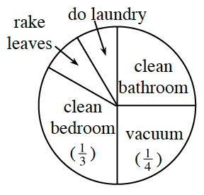
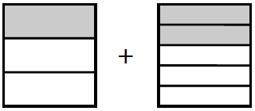
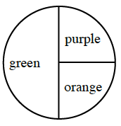
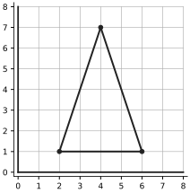
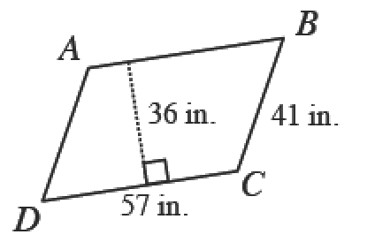
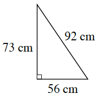

What if there are multiple outcomes?
Compound Probability
So far in this section, you have worked with probabilities involving one specific desired outcome. Now you will investigate probabilities of compound events. Compound events are events with combinations of outcomes. In today’s lesson, you will find the probability that either one of the events or the other event occurs. (In Chapter 5, you will consider the probability that both one event and another event occur.)
Think about these questions as you work with your study team:
How is this probability related to the probability of a single event?
Either what event or what other event are we interested in?
Does our answer make sense?

The sections on the spinner for “rake leaves” and “do laundry” are the same size.
The sections for “clean bathroom” and “vacuum” are equal in size and together make up half the spinner.
What is the probability that Thomas will spin “do laundry”?
Thomas hates to clean the bathroom. When he spins the spinner, what is the probability that it will not point to “clean bathroom”? Explain how you found your answer.
Thomas’s aunt hopes that he will either spin “clean bedroom” or “rake leaves” today.
What is P(clean bedroom)? What is P(rake leaves)?
Spinning either chore in part (a) would make Thomas’s aunt happy. With your study team, discuss the questions below and record your team’s answers. Be sure to justify your conclusions.
What is the probability that he will spin either one of the chores?
How can you write the two outcomes as a single probability?
Ms. Nguyen lets her students borrow pens and pencils on days when they have a quiz. She has a paper bag containing hundreds of wooden pencils, mechanical pencils, and blue pens that students randomly draw from.
Stuart forgot his pencil, and it is quiz day! Ms. Nguyen tells him that one out of every three students who reaches into the bag pulls out a wooden pencil. Two out of every five students each pull out a mechanical pencil. The rest of the students each pull out a blue pen.
If Stuart reaches into the bag without looking, is it more likely that he will choose a wooden pencil or a mechanical pencil? Justify your thinking.
How can you describe the probability that Stuart will pull out some kind of pencil—either a wooden pencil or a mechanical pencil—by using the probabilities that you already know? Consider what you know about adding and subtracting fractions and see if you already have a strategy to write this probability as a single number.
Felicia was trying to find the probability that she would pull either a wooden pencil or a mechanical pencil out of Ms. Nguyen’s bag from problem 1-121 . “I think I need to combine the probability that I will get a wooden pencil with the probability that I will get a mechanical pencil,” she said. She set up this expression and drew a picture:


Felicia wondered if she could add the parts. Is the sum ? Why or why not?
Discuss with your team how Felicia could change the way she writes each fraction so that she can add them easily. Be ready to explain your reasoning. Then, find the sum.
Steve shuffles a standard deck of playing cards and starts to turn them over one at a time. The first three cards he turns over are an ace, a , and a jack. Explore using the 1-123 Student eTool  to access all of the cards in a standard deck.
to access all of the cards in a standard deck.
How many cards are left in the deck?
How many of the remaining cards are aces?
What is the probability that the fourth card will be an ace?
Instead of getting an ace, he gets a as the fourth card. The fifth card is a . What is the probability that the next card will be a king?
Review & Preview
What is the probability of getting either blue or green on a spinner that is green and blue? Show your work.
If you were to spin the spinner at right, what would be the probability of landing on green or purple? Explain how you know.

Find a value for that will make each of the following equations true.
Locate the coordinates of the three highlighted points on the graph of the triangle at right and write them as ordered pairs .

Draw an example of each of the following shapes. If you need help, click each one for the glossary information.
rectangle
square
parallelogram
trapezoid
scalene triangle
right triangle
Find the area and perimeter of each figure below.
a.

is a parallelogram.
b.
